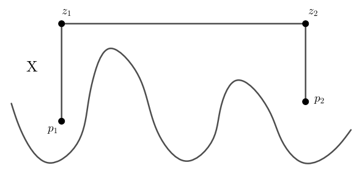

En este capítulo definiremos y analizaremos las propiedades de dos de las etiquetas
topológicas más elementales e importantes dentro de la topología: conexidad y compacidad.
2.1 Conexidad
Decimos que un espacio $X$ es conexo si los únicos subconjuntos
que son abiertos y cerrados son el vacío $\emptyset$ y el total $X$.
Si $X$ no es conexo se suele llamar disconexo. El siguiente
resultado muestra dos relaciones importantes relacionadas con la conexidad.
Lema:
Sea $X$ espacio topológico. Las siguiente afirmaciones son equivalentes:
$X$ es disconexo
$X$ es la unión disjunta de dos subconjuntos propios abiertos.
$X$ es la unión disjunta de dos subconjuntos propios cerrados.
Las descomposiciones del resultado anterior se conocen como
separaciones de $X$. Así, decimos que $X$ es
conexo cuando no existe
ninguna separación para él.
Ejemplo:
Sea $X=\{a,b\}$ con la topología trivial. No existe separación
de $X$ por lo que es conexo. De este ejemplo se sigue que la
conexidad de un espacio topológico depende fuertemente de
su topología.$\bt$
El siguiente resultado proporciona un criterio para determinar la conexidad de un espacio.
Lema:
$X$ es conexo sí, y sólo si, siempre que $X=A\cup B$, con $A,B$ no vacíos,
entonces $A\cap \ol{B}\neq \emptyset$ ó $B\cap \ol{A}\neq \emptyset$.
Ejemplo:
Tomemos $X=\{x\in \br \barra x\neq 0\}$. Notemos que
$$
A_1=X\cap (\infty,0),\qquad A_2=X\cap (0,\infty)
$$
son abiertos relativos, disjuntos y su unión es $X$; así, $X$ es disconexo.$\bt$
Decimos que un subespacio $Y\subseteq X$ es conexo si lo es en la
topología relativa; es decir, es
conexo si no tiene una separación compuesta de abiertos relativos.
El siguiente resultado muestra que la conexidad
se hereda a ciertos subconjuntos.
Lema:
Sea $Y\subseteq X$ conexo. Entonces todo subconjunto $W$
tal que $Y\subseteq W\subseteq \overline{Y}$ es conexo.
En particular, este resultado muestra que la cerradura de
cualquier conexo es también conexo.
Teorema:
El intervalo $[0,1]$ es conexo en la recta $\br$.
$\dem$ Sean $C,D$ cerrados no vacíos tales que $[0,1]=C\cup D$,
sin pérdida de generalidad supongamos $0\in C$. Afirmamos
que $C\cap D\neq \emptyset$. Consideremos
$d=\inf D$ y probaremos que $d\in C\cap D$. Como $D$ es cerrado,
$d\in D$ por el
Lema en Cap. 1 - Sec 1.2.
Si $d=0$
el resultado
se sigue. Ahora, supongamos que $d>0$ y hagamos
$$
E=C\cap [0,d]
$$
Puesto que $E$ es cerrado y además contiene al intervalo $[0,d)$
se sigue $d\in E$; es decir, $d\in C$. $\findem$
Una de las propiedades más importantes de la conexidad es que
se pueda preservar bajo funciones continuas:
Teorema:
Sea $f:X\ra Y$ función continua, con $X$ conexo. Entonces $f(X)$ es conexo.
En particular, si $f:X\ra Y$ es continua, con $X$ conexo
y además la inversa $g:Y\ra X$ es también continua,
se sigue que $Y$ es conexo. Como consecuencia,
ser conexo es una propiedad topológica.
Bajo ciertas circunstancias el resultado anterior tiene un resultado inverso:
Lema:
Sean $Y$ conexo y $f:X\ra Y$ función sobre, continua tal
que $f^{-1}(y)$ es conexo, $\forall y\in Y$. Entonces, si $f$ es
cerrada o abierta, entonces $X$ es conexo.
Como consecuencia de los resultados
anteriores, y por propiedades de las proyecciones $p_X,p_Y$,
es posible probar que el producto cartesiano
$X\times Y$ es conexo sí y sólo si, $X,Y$ también lo son.
Este resultado se puede extender a una cantidad
arbitraria de espacios conexos.
El concepto de espacio conexo se dio en términos conjuntistas al definir
una separación para un espacio $X$. De manera equivalente puede definirse la conexidad en términos
funcionales:
Lema:
Un espacio $X$ es conexo sí, y sólo si, toda función continua
$f:X\ra \bz$ es constante, donde $\bz\subseteq \br$ es
considerado como subespacio discreto.
En el resultado anterior se pudo haber considerado cualquier
otro espacio discreto con al menos dos elementos, por ejemplo $\{0,1\}$.
2.1.1 Conexidad por caminos
En lo que sigue definiremos una propiedad muy cercana
a la conexidad pero en términos un poco más concretos.
Decimos que $X$ es conexo por caminos (También se usan los
términos conexo por trayectorias o arco-conexo)
si para cualesquiera $x,y\in X$ existe función continua
$\alpha:[0,1]\ra X$ tal que $\alpha(0)=x,\alpha(1)=y$.
La función $\alpha$ es llamada el camino que
une a $x$ con $y$; de igual forma se dice que $x,y$ son
los puntos inicial y terminal de $\alpha,$
respectivamente.
Directamente de la definición, y considerando la continuidad
de una composición de funciones continuas, puede mostrarse
que la imagen de un conjunto conexo por caminos bajo una
función continua es también conexo por caminos.
El siguiente resultado presenta una manera de mostrar
la conexidad de un espacio a través de la conexidad por caminos.
Teorema:
Todo espacio conexo por caminos es conexo.
$\dem$ Sea $X$ conexo por caminos y tomemos $A,B\subseteq X$ abiertos,
no vacíos tales que $X=A\cup B$; probaremos que $A\cap B\neq \emptyset$.
Tomemos $x\in A, y\in B$ y $\alpha$ arco que una a $x$ con $y$.
Como $\alpha$ es continua los conjuntos $\alpha^{-1}(A),
\alpha^{-1}(B)$ son abiertos, no vacíos y además
$$
[0,1]=(\alpha^{-1}(A))\bigcup (\alpha^{-1}(B))
$$
Dado que $[0,1]$ que es conexo existe $t\in [0,1]$ con
$t\in \alpha^{-1}(A)\cap \alpha^{-1}(B)$; de aquí que
$\alpha(t)\in A\cap B$ por lo que no existe separación para $X$.$\findem$
En general, el inverso del resultado anterior es falso; es decir,
no todo espacio conexo es conexo por caminos,
algo puede sonar extraño... pero es posible
Ejemplo:
El Peine Roto (Deleted Comb Space) es el subespacio de
$\br^2$ que se muestra en la Figura 1. El espacio se define por
$$
X=\{(1/n,y) \barra n\in N, y\in [0,1] \} \cup \{ (0,1) \} \cup ([0,1]\times \{0\})
$$
El espacio es conexo pero conexo por caminos.$\bt$
Figura 1: Peine Roto o peine del topólogo.
Ejemplo:
Sea $A$ curva plana dada en coordenadas polares por
$$
\left\{\left(\frac{\Theta}{\Theta+1},\Theta\right)\barra \Theta \in
(0,\infty)\right\},
$$
El remolino del topólogo se define como la unión $W=S^1\cup A$ y es un
ejemplo de un espacio conexo pero no arco-conexo; véase el ejemplo 6.23 en
Adams & Franzosa (2008). $\bt$
Figura 2: Remolino topológico.
Decimos que $A\subseteq\br^n$ es convexo si $\forall x,y\in A$ el segmento de recta
$$
\mcal{L}_{xy}=\{xt+(1-t)y\barra t\in [0,1]\}
$$
está completamente contenido en $A$.
Ejemplo:
La bola abierta $B_r(x_0)$ de radio $r$ en $\br^n$ es un convexo: tomemos $x,y\in B_r(x_0)$ y $t\in [0,1]$.
Consideremos
\begin{eqnarray*}
||x_0-(xt+(1-t)y)||&=&||(x_0-x)t+(1-t)(x_0-y)||\\
&\leq &||(x_0-x)t|| +|| (1-t)(x_0-y)||\\
&\leq &t||(x_0-x)|| +(1-t)||(x_0-y)||\\
&\leq &tr +(1-t)r=r
\end{eqnarray*}
Es decir, $\mcal{L}_{xy}\subseteq B_r(x_0)$ y por tanto es convexo. $\bt$
Notemos que de la definición se sigue que todo convexo de $\br^n$
es conexo por caminos; en particular, todo
convexo es conexo.
Es posible agregar una condición (sencilla) en un espacio
para obtener que la propiedad de conexidad y conexidad
por caminos sean nociones equivalentes:
Teorema:
Sea $X\subseteq \br^n$ abierto. Si $X$ es conexo entonces $X$ es arco-conexo.
$\dem$ Tomemos $b\in X$ fijo y consideremos la siguiente relación:
$$
b\approx x \;\sss\; \exists\: \varphi:[0,1]\ra X,\;\mbox{continua}, \;\varphi(0)=b,\:\varphi(0)=x
$$
es decir, $b\approx x$ si se pueden unir por un arco. Hagamos $T=\{x\in X \barra x\approx b\}$ y probaremos que
$T=X$.
Notemos que $b\approx b$, por lo que $b\in T\neq \emptyset$. Sean $x\in T$, $\epsilon>0$ y consideremos
$B_\epsilon(x)\subseteq X$, que existe pues $X$ es abierto. Como $B_\epsilon(x)$ es convexo
(Ejemplo bola abierta convexa) para $y\in
B_\epsilon(x)$ se tiene $y\approx x$. Finalmente, como $x\in T$ se tiene que $x\approx
b\Rightarrow y\approx b$; así $B_\epsilon \subseteq T$ y $T$ es abierto.
Por otro lado, tomemos $y\in \ol{T}$ y $\epsilon>0$. Así $B_\epsilon (y)\cap T\neq \emptyset$, por lo que
existe
$x\in B_\epsilon (y)\cap T$, de donde $x\approx y$ y como $x\approx b \Rightarrow y\approx b$; es decir, $y\in
T$
y $T=\ol{T}$. Así, $T$ es no vacío, abierto y cerrado, por conexidad de $X$ se tiene $T=X$.$\findem$
Siempre resulta natural preguntarse si la conexidad por
caminos se preserva bajo uniones, intersecciones y otras
operaciones entre subconjuntos. El siguiente resultado
responde para el caso de uniones.
Teorema:
Sean $A,B\subseteq X$ subespacios conexos por caminos.
Si $A\cap B\neq \emptyset$ entonces $A\cup B$ es conexo por
caminos.
$\dem$ Consideremos $x\in A,y\in B$ y probaremos que existe camino que los une.
Por hipótesis podemos tomar $z\in A\cap B$ y caminos
$$
\beta:[0,1]\lra A,\;\gamma:[0,1]\lra B,\;\;\begin{cases}\beta(0)=x&\beta(1)=z\\\gamma(0)=z&\gamma(1)=y
\end{cases}
$$
Definimos $\alpha$ como la concatenación de $\beta$ y $\gamma$
$$
\alpha(t)=\begin{cases} \beta(2t),&0\leq t\leq 1/2\\ \gamma(2t-1),&1/2\leq t\leq 1 \end{cases}
$$
y observemos que $\alpha$ es continua (Lema del
Pegado) y además une a $x$ con $y$ y por lo tanto
$A\cup B$ es conexo por caminos.$\findem$
El resultado anterior es válido para una familia $\mcal{C}=\{C_i\}_{i\in I}$ de subconjuntos conexos pro
caminos
de $X$: si $\bigcap \mcal{C}\neq \emptyset$ entonces $\bigcup \mcal{C}$ es conexo por caminos.
Ejemplos:
Dados $x,y\in \br^n$ el segmento de linea
$$
\mcal{L}_{xy}=\{tx+(1-t)y\;|\; \;\;t\in [0,1]\}
$$
es un camino que los une.
Para $n>1$ la esfera $S^n$ es conexa por caminos pues dados
$x,y\in S^n$ no antipodales tomamos el segmento de
linea del ejemplo anterior y lo normalizamos:
$$
\frac{tx+(1-t)y}{||tx+(1-t)y||}
$$
el cual es un segmento sobre la esfera que une a
$x$ con $y$; así, la esfera $S^n$ es arco-conexo.$\bt$
Cuando la conexidad y la conexidad por caminos se consideran
en el contexto de la recta real se obtiene la
siguiente equivalencia entre estos conceptos.
Teorema:
Sea $I\subseteq \br$ cualquiera, con $|I|\geq 2$. Las siguientes afirmaciones son equivalentes:
$I$ es un intervalo
$I$ es arco-conexo
$I$ es conexo
Con este resultado se obtiene una caracterización de
los conexos de $\br$: son todos los intervalos
$$
(a,b),\;\;[a,b),\;\;(a,b],\;\;[a,b],
$$
para $-\infty\leq a\leq b\leq +\infty$.
Ejemplos:
Recordemos que $\br\cong (-\pi/2,\pi/2)$
(Ejemplo $\arctan$).
Del homeomorfismo $(a,b)\cong(-\pi/2,\pi/2)$
se sigue que $\br$ es conexo.
Consideremos
$$
w:\br \ra S^1,\;\; t\mapsto (\cos (2\pi t), \sin (2\pi t))
$$
Como $w$ es continua y $\br$ es conexo se tiene que $S^1$ es conexo. Más aún, el producto $T^2=S^1\times
S^1$,
conocido como el toro bidimensional, es también conexo.
Existencia de Punto Fijo: Sea $f:[0,1]\ra [0,\infty)$ función continua tal que $f(1)=0$.
Consideremos $F:[0,1]\ra \br$ definida como
$F(x)=f(x)-x$. Dado que $F$ es continua y tiene dominio conexo, su imagen es un conexo de $\br$, es decir, es
un
intervalo en $\br$ que contiene a $-1$. Además, como $F(0)\geq 0$ existe $t\in [0,1]$ tal que $F(t)=0 \sss
f(t)=t$; es decir, $f$ tiene un punto fijo.$\bt$
Como extensión del ejemplo anterior se tiene el siguiente resultado propio del cálculo.
Teorema:
Sea $f:[a,b]\ra \br$ continua tal que $f(a)\lt c \lt f(b)$ ó $f(a)>c>f(b).$ Entonces existe $x_0\in [a,b]$
tal que
$f(x_0)=c.$
Como $f$ es continua, $f([a,b])$ es subconjunto conexo de
$\br$ que contiene a $f(a), f(b)$. Por el Lema
anterior tal conexo es un intervalo que además
contiene a $c$, asi existe $x_0\in [a,b]$ tal que
$f(x_0)=c$.
$\findem$
El resultado anterior se puede generalizar a funciones
continuas de la forma $f:X\ra \br$, con $X$ espacio
conexo.
El siguiente ejemplo muestra que la propiedad de conexidad
puede usarse para determinar si dos espacios son o no
homeomorfos.
Ejemplo:
Supongamos $f:[0,1)\ra (0,1)$ homeomorfismo. Por restricción tenemos el homeomorfismo$(0,1)\lra (0,1)\baca
\{f(0)\}$ lo cual no puede ser pues el espacio de la derecha no es conexo. Así, los intervalos $[0,1),(0,1)$
no son homeomorfos.$\bt$
Teorema:
Sean $n\geq 1$ y $f:S^n\ra \br$ función continua.
Entonces existe $x_0\in S^n$ tal que $f(x_0)=f(-x_0).$
$\dem$ Consideremos la función contiua
$$
g:S^n\lra \br, \;\;x\longmapsto f(x)-f(-x)
$$
Por el Ejemplo de la esfera sabemos que $S^n$
es conexo por lo que $g(S^n)$ es un conexo de $\br$ y por tanto un
intervalo. Así, dado $y\in S^n$ el intervalo $g(S^n)$ contiene a los puntos $g(y),g(-y)$ y por lo tanto a
cualquier combinación de ellos, en particular:
$$
\frac{1}{2}g(y)+\frac{1}{2}g(-y)=\frac{1}{2}(f(y)-f(-y))+\frac{1}{2}(f(-y)-f(y))=0
$$
Es decir, existe $x_0\in S^n$ tal que $g(x_0)=0\sss f(x_0)=f(-x_0)$.$\findem$
Este resultado es un caso particular del Teorema de Borsuk-Ulam que
establece que para toda función $f:S^n\ra \br^n$ existe un
punto $x_0\in S$ tal que $f(x_0)=f(-x_0)$.
Ejemplos:
El Teorema de Invarianza del Dominio afirma que
ningún
subconjunto de $\br$ puede ser homeomorfo a un subespacio abierto de $\br^n$, para $n>1$. Si existiera $A\ra
B$
homeomorfismo se tendría, por restricción, una función $A\ra S^{n-1}$, pero por el resultado anterior tal
función no puede ser inyectiva.
Aplicación a Metereología: Supongamos que la superficie del planeta tierra es una esfera.
Si la temperatura está dada por una función
continua, entonces el resultado arriba muestra que en cualquier momento, existe un lugar del planeta con la
misma temperatura que su antipodal; véase Ejemplo 6.22 en
Adams & Franzosa (2008). $\bt$
2.1.2 Homotopía I
Decimos que dos funciones continuas
$f,g:X\ra Y$ son homotópicas si existe una función continua
$$
H:X\times I\lra Y
$$
tal que $H(x,0)=f(x),\;H(x,1)=g(x),\forall x\in X$.
La función $H$ es llamada una homotopía
entre $f$ y $g$ y se usa la notación $f\simeq_{H} g$.
Notemos que para cada $t\in I$, la homotopía $H$ determina
una función continua $H_t:X\ra Y$, donde $H_t(x)=H(x,t)$.
De aquí se obtiene que la relación de homotopía $\simeq$ corresponde
a la idea de una deformación continua de la función $f$ en
la función $g$ a través de la familia de funciones $\{H_t(x)\}_{t\in I}$.
Ejemplo:
Homotopías como caminos continuos: Sean $X=\{*\},\;f,g:X\ra Y$ continuas. Dado que
las imágenes de $f,g$ son puntos $x,y\in Y$, una homotopía
$H$ entre tales funciones tiene la forma
$$
H:X\times I\lra Y,\;\;\; H(*,0)=x,\;\; H(*,1)=y
$$
Dado que $X\times I\cong I$ la homotopía es
una función continua $H:I\ra Y$ con $H(0)=x,\; H(1)=y$; es
decir, la homotopía $H$ es basicamente un
camino continuo entre $x,y$. $\bt$
El ejemplo anterior puede ser generalizado mostrando
la relación que existe entre una homotopía y
conexidad
por caminos: dos funciones constantes
$f,g:X\ra Y,\;f(x)=y_1,g(x)=y_2$ son homotópicas $\sss$ $y_1,y_2$
pertenecen al mismo subconjunto de $Y$ que sea conexo por caminos.
Por otro lado, si las imágenes de $f,g$ estan contenidas en
subconjuntos conexos por caminos disjuntos entonces
no pueden ser homotópicas. Estos resultados muestran que la
propiedad de ser conexo por caminos puede ponerse en
términos homotópicos. Así, dos funciones
$f,g:\br \ra \br\baca \{0\}$ constantes
$$
f(x)=1,\;g(x)=-1
$$
no pueden ser homotópicas porque sus imágenes
están en distintos lados de la recta real.
2.1.3 Componentes conexas
Cuando un espacio no es conexo entonces está
compuesto por pedazos que sí son conexos. Para formalizar
esta situación introduciremos el siguiente concepto.
Un subespacio $C\subseteq X$ es llamado una componente conexa
de $X$ si es el elemento maximal en la familia
de subespacios conexos, ordenados por inclusión; es decir, si cumple:
$C$ es conexo
Si $C\subseteq A$, con $A$ conexo, entonces $A=C$.
Ejemplo:
Notemos que si $C\subseteq X$ es subespacio cerrado, abierto, conexo y no vacío, entonces $C$ es una
componente
conexa de $X$ pues es conexo y si $C\subseteq A$ entonces $C$ es abierto, cerrado y no vacío en $A$; si $A$
es
conexo, entonces $C=A$. $\bt$
Lema:
Sean $x\in X$ y $\{Z_i\}_{i\in I }$ familia de subespacios conexos de $X$ que contienen a $x$. Entonces
$\bigcup_i
Z_i$ es conexo.
En particular, si tomamos $A, B\subset X$ conexos con $x\in A\cap B$ entonces $A\cup B$ es conexo.
Lema:
Cada componente conexa de un espacio es un
subconjunto conexo y cerrado. Además las componentes conexas son
disjuntas a pares.
$\dem$ Para $C$ componente conexa se sabe que $\ol{C}$ es conexo y contiene a $C$, de aquí que $C=\ol{C}$.
Sean
$C,D$ componentes conexas tales que $C\cap D\neq \emptyset$. Por la observación anterior $C\cup D$ es conexo.
Por las inclusiones $C\subseteq C\cup D \supseteq D$ y la condición maximal de $C,D$ se tiene que $C=C\cup
D=D$.
$\findem$
Lema:
Para $x\in X$ consideremos
$$
C(x)=\bigcup \{Y\barra x\in Y,\; Y\;\; \mbox{conexo} \}
$$
Entonces $C(x)$ es la componente conexa de $X$ que contiene a $x$.
$\dem$ Observemos que $\{x\}$ es conexo por lo que $x\in C(x)$.
Por el Lema de unión de subespacios conexos, se sigue que
$C(x)$ es
conexo. Para concluir que es componente conexa debemos
mostrar su propiedad maximal: sea $A\subseteq X$ subespacio
conexo con $C(x)\subseteq A$; de aquí, $x\in A$ y por
definición de $C(x)$ se tiene que $A\subseteq C(x)$.
Así, $A=C(x)$. $\findem$
El espacio $C(x)$ del resultado anterior es llamado la
componente conexa de $x$. Como consecuencia del
resultado anterior se tiene que todo espacio topológico
es la unión de sus componentes conexas.
Como mencionamos antes la conexidad puede servir como
un parámetro para determinar si dos espacios pueden o no
ser homeomorfos. Para el caso de espacios no conexos
tenemos el siguiente resultado
Lema:
La cardinalidad del conjunto de componentes conexas de $X$ es un invariante topológico.
$\dem$ Consideremos $C(x)\subseteq X$ componente conexa de $x$
y $h:X\ra Y$ homeomorfismo. Mostraremos que $h(C(x))$
es componente conexa en $Y$.
Dado que $h(C(x))$ es conexo
y contiene a $h(x)$, se sigue que $h(C(x))\subseteq
C(h(x))$. Por otro lado, $h^{-1}(C(h(x)))\subseteq C(x)$
de donde $C(h(x))\subseteq h(C(x))$. Por lo tanto
$h(C(x))=C(h(x))$ y se tiene una relación 1 a 1 entre
las componentes conexas de los espacios.$\findem$
Ejemplo:
Los espacios $\br\baca \{0\},\;\br \baca \{ 0,1 \}$ no son
homeomorfos pues el primero tiene dos componentes
conexas y el segundo tiene tres. $\bt$
De manera similar a lo que hemos dicho antes definimos la
componente conexa por caminos de $x\in X$ como el
subconjunto conexo por caminos de $X$ más grande que contiene a $x$.
2.2 Compacidad
A diferencia de la conexidad la propiedad de compacidad no es
un concepto muy intuitivo. Una manera útil de
pensar a la compacidad es como una forma de generalizar conjuntos
finitos; en particular, los espacios compactos
generalizan de las siguientes situaciones:
Si consideremos un conjunto finito $S$ entonces toda
función continua $f:X\ra \br$ alcanza un máximo y
un minimo, pues basta ordenar los valores de $f(S)$ y
escoger el mayor y menor de ellos, respectivamente.
Para toda colección de abiertos de un espacio $X$
cuya unión contenga al conjunto finito $S$ siempre es
posible encontrar una subcolección finita de abiertos
cuya unión contenga a $S$: basta con elegir un abieto
que contenga a cada elemento de $S$.
Esta última situación resulta ser la que motiva el
concepto moderno de compacidad; por esta razón, iniciamos
hablando de colecciones que cubren a un espacio topológico.
2.2.1 Cubiertas y compacidad
Una cubierta para $X$ es una familia $\mcal{A}$ de
subconjuntos de $X$ tal que la unión de sus elementos
contiene a $X$; es decir,
$$
X=\bigcup \{A\barra A\in \mcal{A}\}.
$$
En tales condiciones se dice que $X$ es cubierto por
$\mcal{A}$ o que $\mcal{A}$ cubre a $X$.
De acuerdo a la cardinalidad de una cubierta, esta
puede ser finita, infinita numerable} o
infinita o numerable. Por otra parte, si todos
los elementos de una cubierta con subconjuntos abiertos,
entonces la cubierta es llamada abierta, y si los
elementos son cerrados entonces la cubierta es llamada
cerrada.
En general puede haber distintos tipos de cubiertas para
un espacio de acuerdo al tipo de elementos, el número de
elementos y ciertos comportamientos de ellos; por ejemplo,
una cubierta $\mcal{A}$ es llamada localmente
finita> si para $x\in X$ existe $V$ abierto tal que
$$
x\in V,\;\;V\cap A\neq \emptyset,
$$
a lo más para una cantidad finita de $A\in \mcal{A}$. Cuando
se tienen dos cubiertas para un mismo espacios
resulta natural preguntarse cómo se relacionan entre si. Por
ejemplo, si $\mcal{A},\mcal{B}$ son cubiertas y
$\mcal{A}\subset \mcal{B}$ entonces se dice que $\mcal{A}$ es
subcubierta> de $\mcal{B}$.
Ejemplos:
Observemos que de la definición, cualquier base es una cubierta abierta.
Notemos que $\mcal{A}=\{(-n,n)\barra n\in N\}$ es una cubierta abierta para $\br$ pero que ninguna subcubierta
finita de ella cubre por completo a $\br$. De igual manera, la colección
$$
\left\{\left(a+\frac{1}{n},b-\frac{1}{n}\right) \barra a\lt b,\: n\in N \right\}
$$
es una cubierta abierta para $(a,b)$ y ninguna
subcolección finita de ella lo puede cubrir.
Tomemos
$S=\{x_1,\ldots,x_s\}\subset \br$ subconjunto finito y sea $\mcal{A}$ cubierta abierta para $S$. Por
definición de cubierta, para cada $i$ podemos tomar $A_i\in \mcal{A}$ tal que $x_i\in A_i$. De esto se tiene
que $$ S=\{x_1,\ldots,x_s\}\subset \bigcup_{i=1}^s A_i $$ por lo que en este caso la cubierta $\mcal{A}$ sí
existe subcubierta finita. $\bt$
Como se muestra en los ejemplos anteriores no siempre es posible
encontrar una subcubierta finita para una cubierta dada;
cuando esto ocurre se usa un término específico: un
espacio $X$ es compacto> si toda cubierta abierta para
él admite una subcubierta finita. En general,
decimos que $Y\subset X$ es subespacio compacto de $X$
si es compacto en la topología de subespacio. Es
decir, $Y\subset X$ es compacto $\sss$ para cualquier
colección $\mcal{A}$ de abiertos de $X$ tal que
$Y\subseteq\cup \mcal{A}$ existen $A_1,A_2,\ldots A_n\in \mcal{A}$
tales que $Y\subseteq\cup_{i=1}^n A_i$.
Por el Ejemplo de subcubierta finita se obtiene que
todo conjunto
finito es siempre compacto, independientemente de la
topología que tenga.
Notemos que un espacio $X$ no es compacto
$\sss$ tiene una cubierta abierta que
no contiene una subcubierta finita que lo cubra.
Ejemplo
Consideremos el subconjunto de $\br$ $$ X=\{0\}
\cup \left\{1,\frac{1}{2},\frac{1}{3},\frac{1}{4},\frac{1}{5},\ldots \right\} $$
Si $\mcal{A}$ es una cubierta abierta para
$X$ existe $U\in \mcal{A}$ que contiene a $0$ y a los puntos
$\{1,1/2,1/3,\ldots \}$, excepto por una cantidad
finita de ellos; escojamos un elemento de $\mcal{A}$ por cada
uno de estos elementos que no se encuentren en
$X$. La colección de estos abiertos y de $U$ forman una
subcubierta finita de $\mcal{A}$ para $X$, mostrando
que $X$ es compacto. Observemos que el elemento $0$ es el
punto límite de la sucesión $\{x_i=1/i\}_{i\in
N}$, lo cual es parte de la relación entre la compacidad resultados
del Cálculo. $\bt$
Observemos que
el espacio euclidiano $\br^n$ puede ser cubierto por bolas abiertas
centradas en el origen: $$
\br^n=\bigcup_{n\in N} B_n(0) $$ Es decir, la colección de bolas
abiertas es una cubierta abierta para $\br^n$.
Si existiera una subcubierta finita, entonces existen radios
$n_1,\ldots,n_k$ tales que $$ \br^n=\bigcup_{i=1}^k
B_{n_i}(0)=B_{m}(0) $$ donde $m=\max\{n_1,\ldots, n_k\}$.
Notemos que esto no es posible pues si un vector $x$
tiene norma mayor que $m$, entonces $x\notin \br^n$, lo cual
no es posible. Con esto se prueba el siguiente
resultado.
Lema:
Para $n>0$, el espacio euclidiano $\br^n$ no es compacto.
El siguiente resultado muestra la relación entre compacidad y la unión de subconjuntos.
Lema:
La unión finita de subespacios compactos es compacta.
Ejemplo
Un espacio topológico discreto es compacto $\sss$ es finito (basta recordar que en un espacio discreto la
colección $\{\{x\}\barra x\in X\}$ forma una cubierta finita). $\bt$
El siguiente resultado muestra que ser compacto es una propiedad topológica.
Lema:
Sea $f:X\ra Y$ función continua. Si $X$ es compacto, entonces $f(X)$ es compacto.
$\dem$ Consideremos $\mcal{A}$ familia de abiertos de $Y$ que forman una cubierta para $f(X)$. Notemos que la
colección
$$
\{f^{-1}(A)\barra A\in \mcal{A} \}
$$
forma una cubierta abierta para $X$; asi, existen $A_1,\ldots, A_n\in \mcal{A}$ tales que $X=\cup_{i=1}^n
f^{-1}(A_i)$. Esto implica que $f(X)\subset \cup_{i=1}^n A_i$. $\findem$
En particular, todo espacio homeomorfo a un compacto es también compacto.
Teorema (Heine-Borel):
El intervalo $[0,1]$ es subespacio compacto de $\br$.
$\dem$ Sea $\mcal{A}$ una cubierta abierta para $[0,1]$ y tomemos
$$
X=\left\{t\barra [0,t]\subset \bigcup_{i\in I}A_i, A_i\in \mcal{A},\; I\;\mbox{finito} \right\}\subseteq [0, \infty)
$$
Dado que $\mcal{A}$ cubre a $[0,1]$ $0\in X$ pues $0\in \cup \mcal{A}$;
asi, $X$ no vacio y podemos tomar
$b=\sup X$.
Si $b>1$, entonces existe $t\in X$ tal que $1\leq t\leq b$. Asi $[0,1]\subset [0,t]$ y por lo tanto
$[0,1]$ es compacto.
Supongamos que $b\leq 1$. Existe $A\in \mcal{A}$ con $b\in A$.
Por ser abierto existe $\delta>0$ tal que
$(b-\delta,b+\delta)\subset A$. Por otro lado, existe $t\in X$ tal que
$$
b-\delta\lt t\leq b $$ Como, $[0,t]\subset A_1\cup \cdots \cup A_n$ si $0\leq h\lt \delta$, entonces $$
[0,b+h]=[0,t]\cup [t,b+h]\subset [0,t]\cup (b-\delta, b+\delta)\subset \bigcup_{i=1}^n A_i\cup A, $$ por tanto
$b+h\in X$; lo cual no es posible. $\findem$
Ejemplo
Derivado del resultado
anterior, $\br$ no es homeomorfo a $[0,1]$, pues $[0,1]$ es compacto pero $\br$ no. Más aún, dado que
$(0,1)\cong \br$ se tiene que $(0,1)$ no es homeomorfo a $[0,1]$.$\bt$
El ejemplo anterior muestra
que la propiedad de ser compacto es una propiedad topológica que permite distinguir entre intervalos
abiertos y cerrados.
Ejemplo
Como la compacidad es una propiedad topológica, y por el
Teorema de Heine-Borel,
se tiene que todo intervalo $[a,b]$ es compacto. Veremos otra prueba de este hecho más
adelante. $\bt$
Dado que $(0,1)\subset [0,1]$ se tiene que subespacios
arbitrarios de un espacio compacto no necesariamente son
compactos. Sin embargo, la compacidad es una propiedad
heredada a susbespacios cerrados:
Teorema:
Cualquier subespacio cerrado de un espacio compacto es compacto.
$\dem$ Sean $Y\subset X$ cerrado con $X$ compacto y $\mcal{A}$ cubierta abierta de $Y$. Notemos que
$\mcal{A}\cup\{X\baca Y\}$ es una cubierta abierta de $X$, por lo que existen $A_1,\ldots,A_n\in \mcal{A}$ tales
que
$$
X=(X\baca Y)\cup A_1\cup A_2\cup \cdots \cup A_n
$$
De aquí se tiene que $Y\subset A_1\cup A_2\cup \cdots \cup A_n$.$\findem$
El resultado anterior tiene un converso parcial:
Teorema:
Si $X$ es espacio Hausdorff y $K\subseteq X$ es compacto entonces $K$ es cerrado.
En general, sin la hipótesis de Hausdorff, un subespacio compacto no tiene por qué ser cerrado:
Ejemplo
Recordemos que la recta real $\br$ con la topología cofinita no es Hausdorff; además los únicos cerrados
son
los subconjuntos finitos y $X$. Afirm. Todo subconjunto no vacío es compacto.
Sea $\mcal{O}=\{U_i\}_{i\in I}$ cubierta abierta para $A\subseteq \br$ y tomemos $U_{i_0}\in \mcal{O}$ no
vacío.
Hacemos $A\baca O_{i_0}=\{x_1,\ldots,x_n\}$. Para cada uno de estos puntos elegimos $U_{i_j}\in \mcal{O}$
tales
que $p_j\in U_{i_j}$. Finalmente notamos que
$$
A=U_{i_0}\cup U_{i_1}\cup \cdots \cup U_{i_n}
$$
por lo que $A$ es compacto.$\bt$
En algunos contextos resulta conveniente probar que un espacio no es compacto:
Lema:
Si un espacio $X$ contiene un subespacio infinito, cerrado y discreto, entonces $X$ no es compacto.
El siguiente resultado es de gran importancia dentro del Análisis.
Teorema:
Un subespacio de $\br$ es compacto $\sss$ es cerrado y acotado.
$\dem$ $\vuelta$ Para $A\subseteq \br$ cerrado y acotado existe $a>0$ tal que $A\subset [-a,a]$. Dado que
$[-a,a]\cong
[0,1]$ se sigue que $[-a,a]$ es compacto y por el resultado anterior se sigue que $A$ es compacto.
$\ida$ Sea $A\subseteq \br$ compacto. Como la colección $\{(-n,n) \barra n\in N \}$ cubre a $A$ existen
$n_1,n_2,\ldots, n_s$ tales que
$$
A\subseteq (-n_1,n_1)\cup (-n_2,n_2)\cup \cdots \cup (-n_s,n_s)
$$
Entonces, $A\subseteq (-N,N)$, con $N=\max \{n_1,\ldots,n_s\}$; es decir, $A$ es acotada. Ahora para $p\notin A$
la función
$$
f:\br\baca\{p\}\lra \br,\;\;f(x)=1/x-p
$$
es continua, así que $f(A)$ es compacto y también acotado; de aquí que $p\notin \ol{A}$, pues $f$ no toma
valores en $\infty=1/0$, lo que prueba que $A$ es cerrado. Aquí se está usando el hecho que $X\baca A\subseteq
X\baca \ol{A}\sss \ol{A}\subseteq A\sss A=\ol{A}.$ $\findem$
En el siguiente ejemplo se muestra como la estructura de $\br$ juega un papel
importante en el resultado anterior.
Ejemplo:
Cerrado y acotado pero no compacto: Dado $M$ conjunto infinito lo dotamos de una topología a
través de la métrica discreta (ver primer ejemplo de función distancia en Cap. 1, sec 1.4):
$$
d(x,y)=\begin{cases}0,&x=y\\1,&x\neq y \end{cases}
$$
Por definición $M$ es cerrado y además notemos que $M\subset B_2(x_0)$, para cualquier $x_0\in M$; es decir
$M$ es cerrado y acotado. No es compacto pues la colección $\{B_{1/2}(x) \barra x\in M \}$ es una cubierta
abierta que no admite una subcubierta finita.$\bt$
Al igual que el caso de conexidad, existen fuertes vínculos entre la compacidad y ciertos resultados dentro del
Cálculo (Diferencial).
Teorema (del Valor Extremo):
Si $X$ es espacio topológico compacto, entonces cualquier función continua $X\ra \br$ tiene (al menos) un
máximo y un mínimo.
Ejemplo:
l'épigraphe de $f$: Dada $f:\br\ra \br$ función continua consideremos el conjunto
$$
E=\{(x,y)\in \br^2 \barra y>f(x) \}.
$$

Figura 3: L'épigraphe de $f$.
Para $p_1=(x_1,y_1),p_2=(x_2,y_2)\in X$ consideramos $M$ el
máximo de $f$ en el compacto $[x_1,x_2]$. Unimos a
$p_1$ con $p_2$ uniendo al primero con $z_1=(x_1,M+1),$ éste
con $z_2=(x_2,M+1)$ y finalmente éste con $p_2$.
Así, $X$ es conexo por caminos.$\bt$
Teorema:
Sea $f:X\ra Y$ función cerrada con $Y$ compacto.
Si $f^{-1}(y)$ es compacto, $\forall y\in Y$, entonces $X$ es compacto.
$\dem$ Sin perdidad de generalidad podemos suponer que $f$ es
funci\'on sobre, pues si no lo es podemos hacer $Y=f(X)$. Para $A\subseteq X$ consideremos
$$
A'=\{y\in Y | f^{-1}(y)\subset A\}
$$
Dado que $f$ es cerrada y además $Y\backslash A'=f(X\backslash A)$
se sigue que $A'$ es abierto si $A$ también lo es.
Sea $\mathcal{A}$ cubierta abierta de $X$
y consideremos $\mathcal{B}$ una familia de uniones
finitas de elementos de $\mathcal{A}$:
$$
\mathcal{B}=\left\{\bigcup_{i\in I} A_i | I\;\mbox{finito} \right\}
$$
Afirmamos que $\mathcal{B}'=\{B'| B\in \mathcal{B}\}$ es
una cubierta abierta de $Y$.
Sea $y\in Y$ y como $f^{-1}(y)$ es compacto, existen
$A_1,\ldots,A_m\in \mathcal{A}$ tales que $f^{-1}(y)\subset A_1\cup A_1\cup \cdots \cup A_m$.
Entonces, $y\in B'$, para $B=A_1\cup A_1\cup \cdots \cup A_m$.
Como $Y$ es compacto, existen $B_1,\ldots, B_n\in \mathcal{B}$
tales que $Y=\bigcup_{i=1}^nB_i'$ y por lo tanto $X=B_1\cup B_2\cup \cdots \cup B_n$
y, como cada $B_i$ es unión finita de elementos
de $\mathcal{A}$, hemos hallado una subcubierta finita de $\mathcal{A}$ de $X$.$\findem$
El siguiente resultado es un criterio de compacidad
restringiendo la definición a elementos de una base
Teorema:
Sea $\mcal{B}$ base para $X$. Si toda cubierta de $X$ compuesta de elementos de $\mcal{B}$ tiene una
subcubierta
finita, entonces $X$ es compacto.
Decimos que una colección $\mcal{C}$ de
subconjuntos de $X$ tiene la propiedad de intersección
finita
si para toda subcolección finita $\{C_1,\ldots,
C_n\}\subseteq \mcal{C}$ se cumple que $\bigcap_{i=1}^n C_i$ no
vacia. Usaremos ésta propiedad para dar un
criterio de compacidad en términos de subconjuntos cerrados.
Teorema:
Un espacio $X$ es compacto $\sss$ si toda colección
$\mcal{C}$ de cerrados de $X$ que tiene la propiedad de
intersección finita, la intersección $\bigcap_{C\in \mcal{C}} C$
de todos los elementos de $\mcal{C}$ es no
vacia.
Primero un par de observaciones: para una colección
$\mcal{A}$ de subconjuntos de $X$ y la colección de los
complementos
$$
\mcal{A}'=\{A'=X\baca A\barra A\in \mcal{A} \}
$$
se tiene que $\mcal{A}$ es abierta $\sss$ $\mcal{A}'$
es colección cerrada. Por otro lado, recordemos las Leyes
de DeMorgan
$$
X\baca \left(\bigcup U_i\right)=\bigcap \left(X\baca U_i\right)
$$
para obtener que la colección $\mcal{A}$ es una
cubierta para $X$ $\sss$ la intersección $\cap A'$ de todos
los elementos de $\mcal{A}'$ es vacia. En particular,
la subcolección finita $\{A_1,\ldots,A_n\}\subset
\mcal{A}$ es una cubierta para $X$ $\sss$ la intersección
$\bigcap_{i=1}^n A_i'$ es vacía.
Demostración del Teorema
El método de demostración será usando un argumento contrapositivo: $(P\Rightarrow Q) \cong
(-Q\Rightarrow -P)$.
Notemos que el resultado es cierto al notar que
$X$ es compacto $\sss$ dada una colección $\mcal{A}$ de abiertos de $X$,
si $\mcal{A}$ cubre a $X$ entonces
existe subcubierta finita $\sss$ dada una colección $\mcal{A}$ de abiertos,
si ninguna subcubierta finita de
$\mcal{A}$ cubre a $X$ entonces $\mcal{A}$ no cubre a $X$. Por lo expuesto
arriba esto es cierto $\sss$ dada una
colección $\mcal{A}'$ de cerrados si toda intersección finita de
elementos de $\mcal{A}'$ es no vacia,
entonces la intersección de toda $\mcal{A}'$ es no vacia.$\findem$
Un caso de interés del teorema anterior ocurre cuando
consideramos una sucesión numerable anidada (o
descendiente) de subconjuntos no vacíos
$$
K_1\supseteq K_2\supseteq \cdots\supseteq K_n\supset K_{n+1}\supseteq \cdots
$$
Si los $K_i$ son cerrados en un compacto $X$, entonces
por el Teorema que dice que todo
subespacio cerrado es compacto,
los $K_i$ son compactos.
Teorema:
Bajo las condiciones anteriores, si los $K_i$ son no vacios, entonces la intersección $\bigcap_{i\in \bn} K_i$
es no vacia.
$\dem$ Por los comentarios de arriba basta notar que para cada $i$ el complemento $K_1\baca K_i$ es abierto en
$K_1$
y que si la colección de abiertos $\{K_1\baca K_i\}$ cubre a $K_1$ entonces $\bigcap K_i=\emptyset$, pero
observemos que dicha colección no puede cubrir a $K_1$.$\findem$
Ejemplo:
Para un conjunto $X$ y un elemento distinguido $*\in X$ podemos construir una topología definiendo sus
subconjuntos cerrados (veáse
Ejemplo de la Topología de Fort)
$$
B\; \mbox{cerrado}\; \sss \; *\in B\; \mbox{ó}\; B\:\mbox{finito}
$$
Notemos que la intersección arbitraria $\cap B_i$ de cerrados es un
cerrado por lo que $*\in \cap B_i$ ó $\cap
B_i$ es finito; en cualquier caso cualquier colección de
cerrados tiene interseción vacia y, por el
Teorema de intersección vacía de compactos,
se tiene que $X$ es compacto. $\bt$
El ejemplo anterior muestra que en cualquier conjunto con
un elemento distinguido puede definirse una topología
que le otorga una estructura de espacio Hausdorff y compacto.
2.2.2 Producto finito de compactos es compacto
En esta sección daremos una caracterización de los espacios compactos en términos de productos
cartesianos. Iniciamos por un caso sencillo:
Lema:
Sean $A\subset X$ compacto y $y\in Y$. Entonces para todo abierto $W\subset X\times Y$ que contiene a $A\times
\{y\}$ existen $U\subset X, V\subset Y$ abiertos tales que $A\times \{y\}\subset U\times V\subset W$.
$\dem$ Para cada $x\in A$, la pareja $(x,y)$ tiene una vecindad de la forma $U_x\times V_x$ contenida en $W$.
Notemos que
$$
A\times \{y\}\subset \bigcup_{x\in A} (U_x\times V_x)
$$
y como $A$ es compacto, existen $x_1,x_2,\ldots,x_n\in A$ tales que $A\times \{y\}\subset \cup_{i=1}^n
(U_{x_i}\times V_{x_i})$. Con esto definimos $U=\cup_{i=1}^n U_{x_i},\:V=\cap_{i=1}^n V_{x_i}$, con lo que se
obtiene lo que se deseaba:
$$
A\times \{y\}\subset U\times V\subset W.\;\;\; \blacksquare
$$
Teorema (Teorema de Wallace):
Sean $X,Y$ espacios topológicos, $A\subset X,B\subset Y$ subespacios compactos y $W\subset X\times Y$
abierto tal que $A\times B\subset W$. Entonces existen abiertos $U\subset X,\: V\subset Y$ tales que
$$
A\subset U,\;B\subset V,\;\;U\times V\subset W
$$
$\dem$ Por el Lema anterior, para cada $y\in B$ existen abiertos $U_y\subset X, V_y\subset Y$ tales que $A\times
\{y\}\subset U_y\times V_y\subset W$. Observemos que $B\subset \cup_{y\in B} V_y$ y como $B$ es compacto
existen $y_1,y_2,\ldots, y_k \in B$ tales que
$$
B\subset \bigcup_{i=1}^k V_{y_i}
$$
El resultado se obtiene al definir los abiertos
$$
U=\bigcap_{i=1}^k U_{y_i},\;\; V=\bigcup_{i=1}^k V_{y_i}.\;\;\blacksquare
$$
El Teorema de Wallace puede ser establecido para el producto de una cantidad arbitraria de espacios con
subespacios compactos.
Véase Engelking (1989).
El siguiente resultado es el inverso parcial del
Teorema
acerca de subespacios cerrados es compacto, pero para espacios Hausdorff
Corolario:
Todo subespacio compacto de un espacio Hausdorff es cerrado.
$\dem$ Sean $K\subset X$, con $X$ Hausdorff y $K$ compacto. Probaremos que $X\baca K$ es abierto.
Para $x\in X\baca K$ el producto $\{x\}\times K$ no intersecta a la diagonal $\triangle\subset X\times X$.
Como $X$ es Hausdorff, $\triangle$ es cerrado y $\{x\}\times K$ está contenido en el abierto $W=(X\times
X)\baca \triangle$. Por el teorema anterior, existen abiertos $U,V\subset X$ tales que
$$
\{x\}\times K\subset U\times V\subset W
$$
En particular, $x\in U, U\cap K=\emptyset\Rightarrow U\subset X\baca K$.$\findem$
Este resultado es demostrado en Munkres (2000 p. 165)
usando el siguiente lema, que a su vez muestra la
relación entre compacidad y la propiedad del espacio de separar ciertos subespacios.
Lema:
Sean $X$ Hausdorff y $Y\subseteq X$ compacto. Para cada $x_0\notin Y$ existen abiertos $U,V$ tales que $U\cap
V=\emptyset,\;x_0\in U,\;Y\subset V$.
Decimos que un espacio $T_1$ es regular (o $T_3$) si para cualesquiera
$x\notin B\subseteq X$, con $B$ cerrado, existen abiertos disjuntos $U,V$ tales que $x\in U, B\subseteq V$.
Todo subespacio de un espacio regular es regular; además cualquier producto de espacios regulares es
regular. Así, el resultado anterior prueba que compacto + Hausdorff $\Ra$ regular.
A continuación otra consecuencia del Teorema de Wallace que será de gran utilidad en las secciones
posteriores
Corolario (Teorema de Kuratowski):
Sea $X$ espacio compacto. Para cualquier espacio $Y$ la proyección $p_Y:X\times Y\ra Y$ es una función
cerrada.
$\dem$ Tomemos $C\subset X\times Y$ cerrado; probaremos que $p_Y(C)$ es cerrado. Notemos que si $p_Y(C)=Y$ el
resultado se sigue inmediatamente. Asi, supongamos que existe $y\notin p_Y(C)$ y notemos que
$$
X\times \{y\}\subset (X\times Y)\baca C
$$
asi que por el Teorema de Wallace existe vecindad abierta $V$ de $y$ tal que $X\times \{y\}\subset (X\times
V)\baca C\Rightarrow (X\times V)\cap C=\emptyset$; de aquí que $V\cap p_Y(C)=\emptyset$.$\findem$
A continuación probaremos el resultado principal de esta sección
Teorema:
El producto de una cantidad finita de espacios compactos es compacto.
$\dem$ Consideremos primero el caso del producto cartesiano de dos espacios compactos $X,Y$. Por el corolario
anterior, la proyección $p_Y:X\times Y\ra Y$ es función cerrada y como para cada $y\in Y$ $p_Y^{-1}(y)=
X\times \{y\}\cong X$ es compacto, obtenemos que $X\times Y$ es compacto
(ver Teorema en sección 2.2.1). El
teorema se obtiene entonces al aplicar un argumento de inducción. $\findem$
El caso del producto de una cantidad infinita de compactos es conocido como el Teorema de
Tychonoff
(Munkres 2000). Lo
establecemos a continuación pero dejaremos su
demostración para un Capítulo futuro.
Teorema:
El producto de una cantidad arbitraria de compactos es compacto.
Sea $K\subset \br^n$ compacto. Recordemos que
$\{B_n(0) \barra n\in N\}$ es cubierta abierta para
$\br^n$ y
por lo tanto también para $K$. Dado que $B_{n_1}(0)\subset B_{n_2}(0)$,
para $n_1\leq n_2$, se tiene que una
subcubierta finita está contenida en una sola bola $B_m(0)$
(ver
Lema acerca de espacios euclidianos no
compactos)
y por lo tanto el
compacto $K$ es acotado. Por el
Ejemplo de un conjunto cerrado y acotado
pero no compacto, la
implicación contraria (acotado $\Rightarrow$
compacto) debe ser especial e importante y lo obtendremos
a partir del resultado anterior.
Teorema:
Un subconjunto $A\subseteq \br^n$ es compacto $\sss$ es acotado y cerrado.
$\dem$ $\ida$ Sea $A\subset \br^n$ compacto y consideremos $A\ra \br, x\mapsto |x|$. Dado que la función es
continua y $A$ es compacto la función alcanza un máximo, lo que implica que $A$ es acotado. Por otro lado,
como $\br^n$ es Hausdorff, por el Corolario acerca de subespacios compactos de Hausdorff, se sigue que
$A$ es cerrado.
$\vuelta$ Sea $A$ cerrado y acotado, entonces existe $a>0$ tal que $A\subset [-a,a]^n$. Como la compacidad es
una propiedad topológica y $[-a,a]\cong [0,1]$ se sigue que $[-a,a]$ es compacto; más aún, por el Lema
de arriba se tiene que $[-a,a]^n$ es compacto. Finalmente, usando el
Teorema
que dice que todo subespacio cerrado es compacto, se tiene que $A$ es
compacto. $\findem$
Ejemplo:
Toda esfera es compacta: Consideremos $S^{n}\subset \br^{n+1}$ esfera de dimensión $n$ y
notemos que es un subespacio acotado.
También es cerrado pues $S^{n}=f^{-1}(1)$, donde $f:\br^n\ra \br$ es la función continua
$$
(x_1,x_2,\ldots,x_n,x_{n+1})\longmapsto x_1^2+x_2^2+\cdots+x_n^2+x_{n+1}^2
$$
Así, $S^{n}$ es compacto. El disco unitario $D^n=\{x\in\br^n \barra |x|\leq 1\}$ también es compacto pues es
cerrado por definición y también acotado. $\bt$
Compacidad es una propiedad que puede ser usada para determinar si una función es un homeomorfismo.
Corolario:
Si $f:X\ra Y$ es función continua, $X$ compacto y $Y$ Hausdorff entonces $f$ es cerrada. Si además $f$ es
biyectiva, entonces $f$ es homeomorfismo.
$\dem$ Para $A\subset X$ cerrado se tiene que es compacto. Como $f$ es continua, $f(A)$ es compacto y por el
Corolario acerca de subespacios
compactos de Hausdorff,
$f(A)$ es cerrado. Finalmente recordemos que si $f$ es continua, biyectiva y cerrada,
entonces $f$ es homeomorfismo (Lema acerca de homeomorfismos). $\findem$
2.2.3 El número de Lebesgue
Dada una cubierta abierta $\mathcal{A}$, un número $\delta>0$ es llamado
el número de Lebesgue de $\mathcal{A}$ si todo conjunto de ''tamaño'''
menor que $\delta$ está contenido en algún elemento de $\mathcal{A}$.
El siguiente resultado garantiza la existencia del número de Lebesgue para un espacio compacto métrico.
Teorema (de Lebesgue):
Sean $Y$ espacio métrico compacto, $f:Y\to X$ función
continua y $\mathcal{A}$ cubierta abierta de $X$.
Entonces existe un número real positivo $\delta$ tal que
$$
f(B_\delta(y))\subseteq U, \;\; p.a. \;U\in \mathcal{A}
$$
para cualquier $y\in Y$.
$\dem$ Para cada entero positivo $n$ definamos
$$
Y_n=\{y\in Y | B_{2^{-n}}(y)\subseteq f^{-1}(U),\;\mbox{para algún}\; U\in \mathcal{A} \}
$$
Notemos que por definición $Y_n\subseteq Y_{n+1}$; además,
como $\mathcal{A}$ es cubierta para $X$, la colección $\{f^{-1}(U)| U\in \mathcal{A}\}$
es cubierta de $Y$ y se tiene que $\cup_n Y_n=Y$.
Afirmación: $Y_n\subseteq Y_{n+1}^\circ$.
Sea $y\in Y_n$ y elijamos $U\in \mathcal{A}$ tal que $B_{2^{-n}}(y)\subset f^{-1}(U)$ y
tomemos $z\in B_{2^{-(n+1)}}(y)$. Notemos que para $w\in B_{2^{-(n+1)}}(z)$ se tiene
\begin{eqnarray*}
d(w,y)&\leq & d(w,z)+d(z,y)\\
&\leq &2^{-(n+1)}+ 2^{-(n+1)}=2^{-n}
\end{eqnarray*}
Es decir, $B_{2^{-(n+1)}}(z)\subseteq B_{2^{-n}}(y)$ por lo
que $z\in Y_{n+1}$ y $y\in Y_{n+1}^\circ$. En particular
$\cup_n Y_n^\circ =Y$. Como $Y$ es compacto $Y=Y_m^\circ $, para algún $m$;
finalmente $Y=Y_m$, por construcción.$\findem$
La existencia del número de Lebesgue para un espacio $X$ puede garantizarse
con el comportamiento de funciones continuas definidas en $X$. El siguiente
corolario será de gran utilidad cuando se estudie la función exponencial
$\mathbb{R}\to S^1$ para el cálculo del grupo fundamental de $S^1$.
Corolario:
Sea $\alpha:I\to X$ camino y $\mathcal{A}$ cubierta abierta de $X$.
Entonces existe un entero positivo $n$ tal que para cada $i=0,1,2,\ldots, n-1$
$$
\alpha\left(\left[\frac{i}{n},\frac{i+1}{n}\right]\right)
$$
está contenido en algún elemento de $\mathcal{A}$.